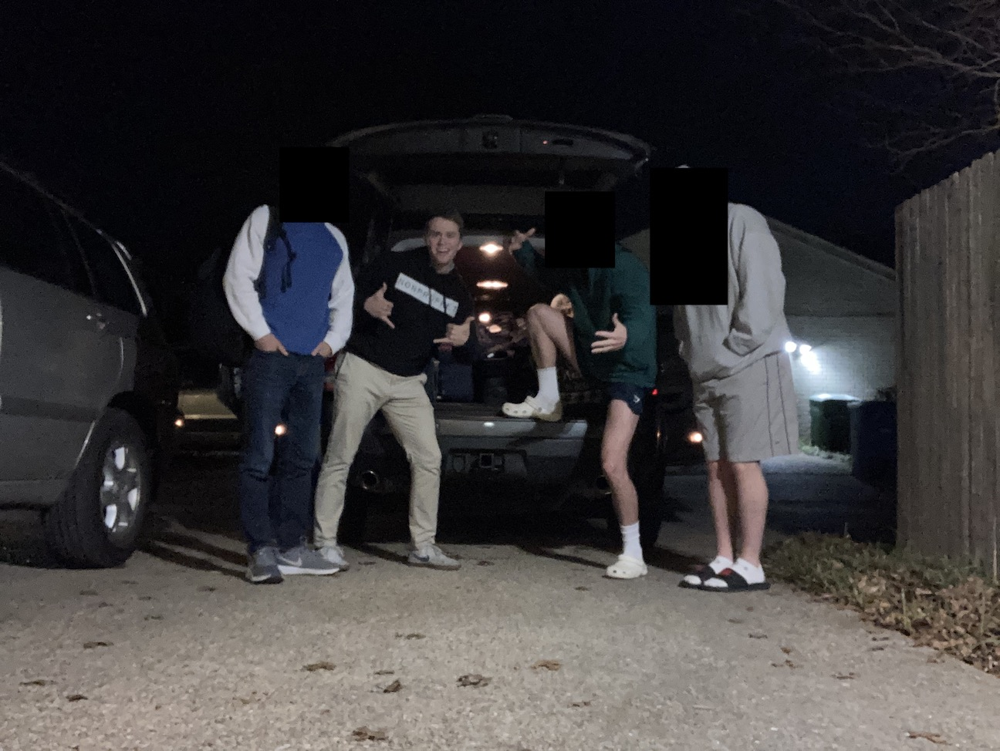
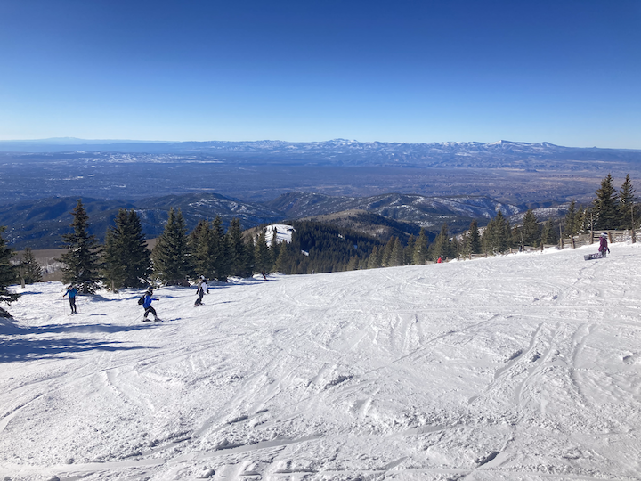
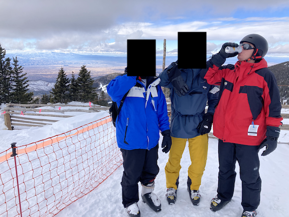

Santa Fe trip report from 06-09 January 2022.
An uneventful drive beginning at 4:00am. We (myself and three of my oldest friends) stopped in Roswell at The Cowboy Cafe for lunch where we had some awesome service but subpar food. Driving entertainment consisted of conversation, chess games (me playing random people), and music.
We arrived in a sunny Santa Fe around 3:00pm, unpacked, went grocery shopping, then went out for pizza at Il Vicino. Food was solid, portions meager. Bedtime was soon after in preparation for the next day's slopes.
After getting our rental gear (skis, boots, helmets, poles), we hopped on Lift 1 to get our first warm up run of the day on the green Santa Fe Trail. (Reminder that difficulty of runs goes green, blue, black, double-black.)
Apparently my pizza skills are still there. I made it down with a single fall on the steepest part of the green, getting some practice on stopping and turning and slowing throughout. We made one more run down Santa Fe Trail and made it to the mid lifts. Tesuque Peak took us up to the start of our first blue run, Gayway. And a blue run it was.
The run went straight east, giving a full panoramic view of the valley and surrounding mountains. By far the best view on the mountain. But my skiing was much less pretty. I fell down about eight times on the first slope alone, mostly because when turning left I angled my skis too far and fell down. Getting in was another trouble. Always kick, never push!
After about 30 minutes I made it back to blissful safety on the green, all while the two most experienced of our group had made it down and back up in the same time. Shoutout C for staying with me. Love you, bro.
Next up was Sunset Trail on the west side of the mountain, a nice (or as everyone else called it, "fucking terrible") combination of cross-country skiing on a flat path and some nice downhill. In other words, we SkiErged for a couple of minutes and bombed it the remaining. Sunset has a variety of other blue options near the bottom, making it nice for something different. The east side doesn't have too many options like that. We also found out that this was the first day the entire mountain was open for skiing. Lucky us!
Lunch consisted of trail mix and a ham and spinach sandwich. We washed it down with another few hours of skiing and called it a day.
Dinner was at Fiesta Oaxaca, and while the food was good, the portions were laughable. One of us got two "quesadillas", which were really just two tortillas with a bit of cheese and meat, for $14. $14! Such a rip-off. That, or maybe I'm just used to Texas prices. But probably the former.
We played custom What Do You Meme? back at the apartment. This version is wayyyyy more fun than using the standard cards because you can get a bit more... customized (what that exactly means is up to the reader). Playing is simple: open a phone note app, put as many numbered list rows as there are players (excluding the judge), then allow the players directly after the judge to choose any number he wants to type next to. Continue this way around the table and watch as hilarity, disgust, and or offense takes place.
I'm back, baby. Killed the slopes this day. Something clicked and instead of skiing super wide Ss on the slopes (i.e., taking up the entire width of the slope before turning the other direction), I had progressed to some skinny Ss. What do I attribute this to? First, not being scared of crashing as much. My falls didn't hurt (too much) and there were very few ice patches where it would hurt. Second, trusting the process. Turning speeds you up pretty quickly, but can be controlled easily afterwards.
I went down my first black diamond ski run ever, T Bird Glade. Whole buncha moguls and through the trees. Not very fun, but made it out alive, so that's nice. After that it was blues all day. Hit a super icy Sunrise towards the middle of the day and skid down a majority of the slope. Scary, but fun nonetheless.
Dinner was at The Burger Stand @ Burro Alley. I had their Fire burger and we all got different types of fries. I also had a spicy chocolate craft beer that I can't find the name of. We got home, packed our stuff, and hit the hay.
Sadly, my 2:00am alarm with the song Bodies as the sound did not work for some reason, and we were softly awoken by my normal alarm sound. Lame. Everything was packed in the car and we headed home, arriving back around 3:00pm.
Sorry to any Santa Fesinos, but your town seems pretty boring, although we were back in our apartment by 8:00pm most nights... There were never many people out and about in the "downtown" district, and everything was extremely quiet by 7:00-8:00pm. Would love to know more about it.
The architecture is all the same! Santa Fe really loves its pueblo-style buildings. Heck, they were even building new ones! It's a unique style and awesome they're so proud of their heritage, but some variety may do some good.
There were an insane amount of art shops downtown. How do these places stay in business? Do they really sell enough to keep up with their rent and other costs?